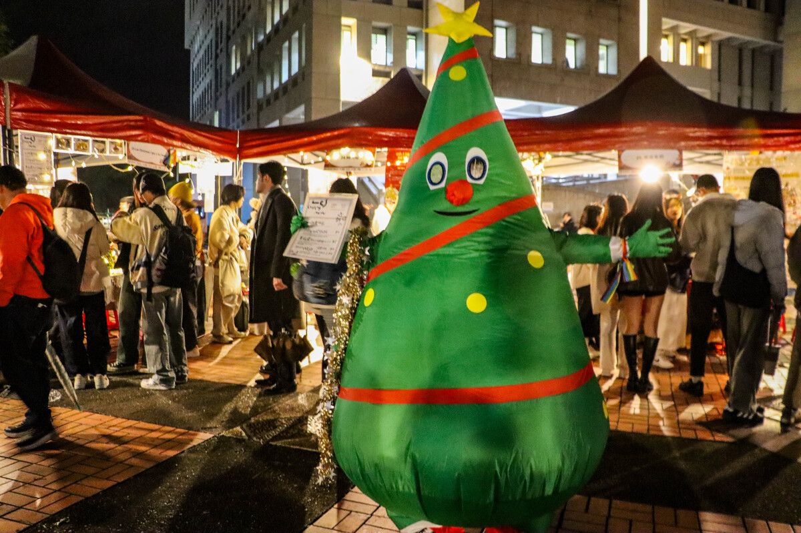
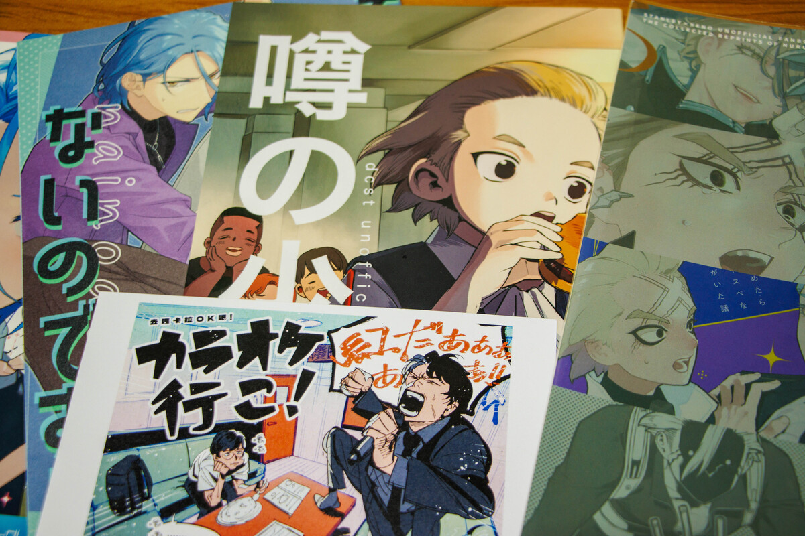
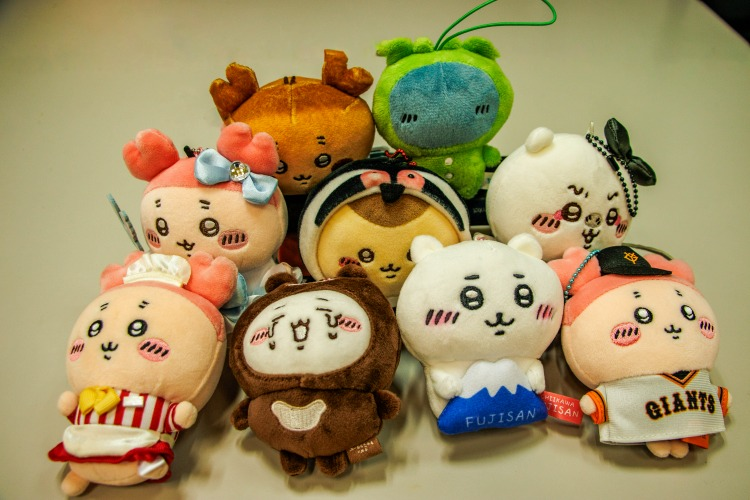

【記者沈韋彤連線報導】14日於國立政治大學（以下簡稱政大）臉書學生交流版，出現一篇預購文，一名學生表示，將在政大聖誕市集販售自製的《吉伊卡哇》造型餅乾。針對攤主販售造型餅乾行為，引發貼文留言區討論是否涉及二次創作（以下簡稱二創）營利爭議。

23日至25日於政大聖誕市集，出現攤位產品涉及二創商業使用爭議。由於餅乾產品和日本原廠商糕點類產品類似，屬於較高風險的商業行為。 圖／沈韋彤攝
政大學生會認為，攤商販售二創商品的行為，已經違反招商簡章規範。負責管理校園市集的學生會活動部，於《2024年聖誕市集招商簡章》中明確規範「攤位不得販賣盜版商品」。在招商表單中，活動部要求攤商上傳預計販售的商品圖片，以利審核和評分。審核通過後，活動部也會與攤商簽署契約，內容包含「乙方應保證其商品無侵害第三人智慧財產權之情事，且其衍生之糾紛應由乙方概括承受與處理」等文字。在學生會輔導下，攤主於隔日修正預購表單和宣傳圖文，以免費贈送餅乾處理著作權爭議。

判斷二創合理使用的四種要素分別為使用者目的、受侵害著作的性質、使用著作的程度、是否傷害原著在經濟上或潛在經濟上的市場價值。圖由左至右為《あんスタ!!》（偶像夢幻祭）與《Dr.STONE》（新石紀）兩部二創作品，下方為〈カラオケ行こ！〉（去唱卡拉OK吧！）明信片。 圖／沈韋彤攝
目前台灣法律並無明確定義二創為何，不過二創可能會侵害著作權中的「改作權」（註1）與「重製權」（註2）。這兩種權利屬於著作權人或著作財產權人（註3）專有，如果未取得原作者同意就二創，將面臨民事或刑事上的責任。政大科技管理與智慧財產研究所教授陳秉訓說明，「著作權法裡的民事損害賠償，最低金額就是一萬元。」但對於常接觸的二創的群眾來說，會覺得二創存在灰色地帶。逛市集的學生鄭同學（化名）認為，二創跟原版不一樣，「像角色的二創畫風或設定，可能跟原版不同。」但陳秉訓回應，二創仍然立基於原作，不會因為部份創新，就代表它具使用的合法性，「只是我們沒有協助使用者合法利用的機制，所以就是一個交易問題。」
面對二創侵權防範，原作者公開聲明拒絕授權，只能顯示他們主動維護自己權利，創作者進行概念上改良並創造出屬於自己的角色，才能避免爭議。《吉伊卡哇》作者曾公開表示，禁止將原作品進行商業用途。但陳秉訓指出，是否公開聲明並非成立民事侵權行為要件。因為聲明僅代表原作者不願意授權，無直接法律效果，作者不需透過聲明才享有保障。非當事市集攤主邱同學（化名）說明，「如果被二創的IP（註4）本身有侵權疑慮，我就不會去販售。」但他認為，二創同時也是一種推廣IP的形式。具體防範侵權的方式，陳秉訓補充道，「如果真的很喜歡原作，可以選擇用部分概念創作新東西。」像是美國漫畫中DC漫畫公司（DC Comics）和漫威漫畫（Marvel Comics）的英雄超能力，就有部份類似的概念。

二次創作仍須經由作者授權後方可合理使用，表達喜愛的同時，也能降低和官方或原作者的衝突風險。圖為正版《吉伊卡哇》玩偶。圖／沈韋彤攝
「我會看二創，是因為想看一些官方不會畫，但是粉絲想看到的東西。」逛市集的學生高同學（化名）這麼解釋。關於二創營利的討論，鄭同學則表示，「我認爲二創不一定會跟盈利扯上關係，二創算是觀衆對於作品的熱愛。」對於漫畫粉絲來說，使用二創的方式表達對原作品的喜愛習以為常。然而也需注意使用範圍，避免侵權疑慮，方可安全地「用愛發電」。